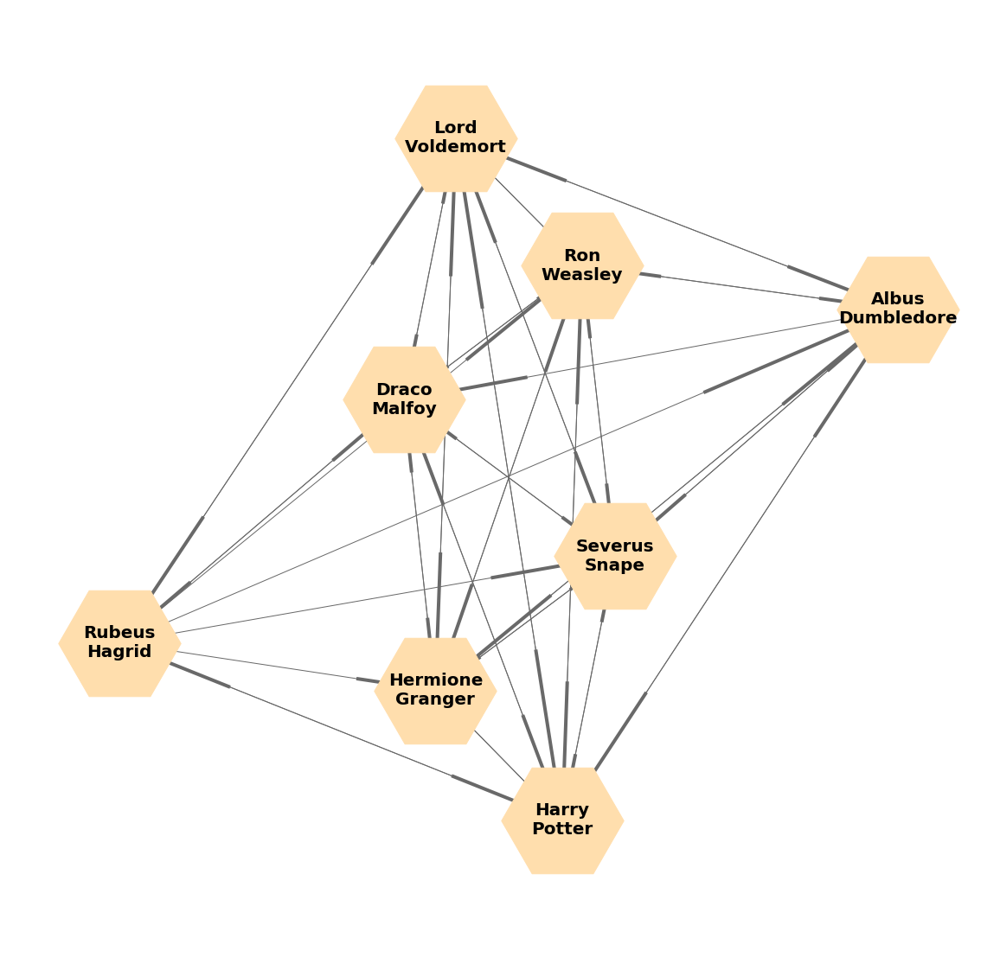

SENTIMENTAL ANALYSIS
Here are some of my latest lorem work ipsum tipsum.
Click on the images to make them bigger


I love my wand
Harry potter. A magic universe … …. With a lot of special characters ... That are waiting to be analysed!
I love my wand
Harry potter. A magic universe … …. With a lot of special characters ... That are waiting to be analysed!

This monkey is called 'Suzanne.' It's a default object in an incredible free 3D modeling tool called 'Blender.'
I love my wand
Harry potter. A magic universe … …. With a lot of special characters ... That are waiting to be analysed! Find the key characters…. ….Harry, Ron and Hermione…. Are there any else? Compare the books sentimentality to the films…. where is the drama? ….-----..... Analyse the spell usage in each book…. ...in which film does harry need most glass reparations? Community standards… Are the good guys interacting with the bad guys? And of course... ...find happy moments!
Welcome to my website. I am Harry Potter and the analysts. Sentimental analysis: analyse the books and find happy moments. Compare the subtitle of the films and the books. Different communities of characters: death eaters, dumbledore's army, order of the phoenix, … Find the modularity of these communities and compare with the result of the Louvain algorithm. Find important spells such as Avacadabra and Patronus with basic counts in the book TF-IDF with Wordcloud: in the books in order to find the most frequent words in the books. This could be interesting to compare with the sentimental analysis.
<Im really good at:
Making spells
Speaking british
Killing
Here are some of my latest lorem work ipsum tipsum.
Click on the images to make them bigger
I love my wand
Harry potter. A magic universe … …. With a lot of special characters ... That are waiting to be analysed!
I love my wand
Harry potter. A magic universe … …. With a lot of special characters ... That are waiting to be analysed!